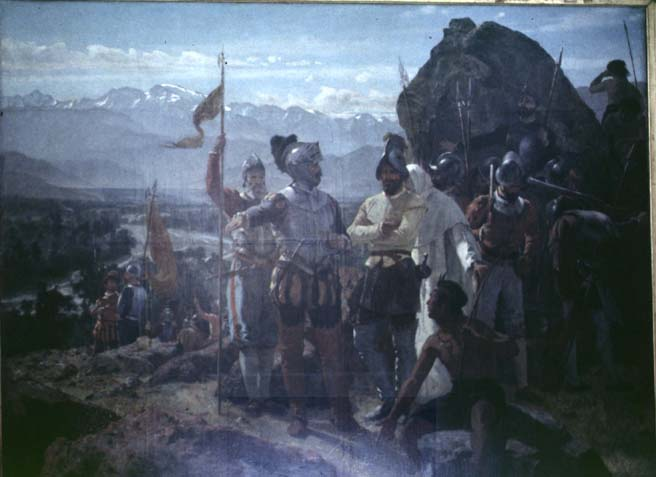

|
|  |
|
Pedro Lira, La fundación de Santiago
|
Of course, the new quality of these representations was the fact that it repossessed the once private relics of the upper class in the name of the state. In Argentina and Chile as well as –in a different constellation– Brazil, the construction of exclusive and restricted visual canons of national memory can thus also be seen as evidence of that which it responded to and tried to prevent and suppress, namely, the emergence of a much more diverse and contradictory public sphere where traditional patterns of power and legitimacy increasingly came under scrutiny. Towards the end of the century, therefore, not merely independence as the heroic founding epic, but also the colonial past was re-evaluated as a national legacy that rooted the nation in a 'deep past' and could be used to distinguish descendants of the 'old' Creole families from those of more recent arrival. Painters such as Pedro Lira in Chile, Angel Della Valle in Argentina, or Aurélio de Figueiredo in Brazil, could count on their work being purchased by the state itself whenever they focused on edifying subjects from the national past. 'The Foundation of Santiago', exhibited at the Universal Exhibition of Paris in 1889, was afterwards bought by the Chilean government at the fairly respectable price of $ 4,000.
|